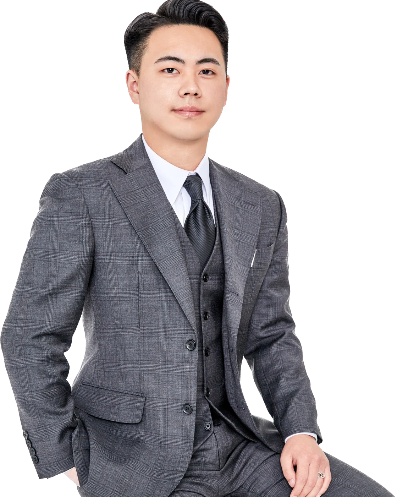

고객 DB 신청과 첫 상담
첫 연락은 DB 클래스에서 연습, 첫 상담은 선배와 함께
“어떻게 저렇게 말을 잘하시는지 놀라울 따름이었습니다.”

보험 기초시험 대비 이론
2주 신인교육 뒤 고객 DB로 첫 상담 고객 DB와 동반상담 보기 →
지급 조건은 상담에서 안내
설계사 10년, 이세연 지점장 인터뷰 →고객 DB 매월 무료블로그·SNS·CS 클래스 고객 DB와 동반상담 보기 →
보장분석서류 작성수수료·시책 계산 전산 화면 보기 →
원하는 트랙 선택 승격 단계 보기 →
본업·육아 일정에 맞춘 활동 계획
보험 경력 없이 시작 가능 교육 과정 보기 →
신입·경력 구분 없이 신청 가능
전국 어디든 개설 가능
지금 인원과 활동 지역에 맞춰 조건 상담
보증금임차료 전액 지원 팀·지사 개설과 승격 보기 →
첫 연락은 DB 클래스에서 연습, 첫 상담은 선배와 함께
“어떻게 저렇게 말을 잘하시는지 놀라울 따름이었습니다.”

 블로그 클래스키워드 코칭과 글 첨삭제목·문장 첨삭, 보험사 광고 심의 준비1:1 피드백글쓰기 루틴클래스 소개 보기 ＋
블로그 클래스키워드 코칭과 글 첨삭제목·문장 첨삭, 보험사 광고 심의 준비1:1 피드백글쓰기 루틴클래스 소개 보기 ＋ CS 클래스고객 연락 계획과 소개 요청연락 주제·시기 계획, 실행 기록 · 월별 점검고객 연락소개·관계 관리클래스 소개 보기 ＋
CS 클래스고객 연락 계획과 소개 요청연락 주제·시기 계획, 실행 기록 · 월별 점검고객 연락소개·관계 관리클래스 소개 보기 ＋첫 연락 스크립트방문 약속상담마무리 화법 연습
계정 운영법1:1 피드백


여러 보험사 상품 비교제안
2022년 업계 최초 코스닥 상장 2025년 코스닥 150 지수 편입
여러 보험사의 보장보험료 비교
전문 설계 담당자 상담계약 변경만기 알림
PC모바일로 고객 정보, 계약·유지 현황 확인
계약별 수수료·시책, 실제 지급 내역 조회
전문 자료교육동반상담세미나
상품별 특징영업 이슈 정리 자료

당신의 새로운
도약을 함께합니다.
처음 이 일을 시작했을 때 가장 막막했던 건 일이 어려워서가 아니라, 무엇부터 해야 할지 알려 주는 사람이 없어서였습니다.
그래서 도약지점은 혼자 버티게 두지 않는 구조부터 만들었습니다. 블로그·유튜브·SNS·AI를 활용한 온라인 영업과 상담을 요청한 고객을 만나는 대면 영업을 함께 하고, 처음 오신 분은 기본 교육부터 첫 상담까지 곁에서 같이 갑니다.
고객에게 이로운 상품만 권하고, 이미 가입한 보험을 더 좋게 만들어 드리는 것이 우리의 일입니다. 지인에게 부탁하는 예전 방식이 아니라 고객이 먼저 상담을 요청하는 방식으로 일합니다.
새로운 시작을 고민하고 계신다면 편하게 연락 주세요. 커피 한 잔 하면서 이 일이 나에게 맞는지부터 같이 이야기해 보겠습니다.


보험사별 연락처·전산 화면


입사 6개월월평균 급여 640만원
“지인 영업할 필요 없이 괜찮은 소득을 벌 수 있었어요.”
어렸을 때부터 미용업에만 10년 정도 있다가, 손목에 질병이 생겨서 미용 일을 못 하게 됐어요.
원장님의 소개를 받아 보험설계사라는 직업을 알게 되었고 신입도 잘할 수 있다는 말에 이끌려 입사했던 거 같아요.
고향은 경상도고, 지금 있는 곳은 오산이라 지인 영업을 할 수 없는 상황이었어요.
처음 왔을 때부터 DB 영업에 대한 교육과 관리자의 매니지먼트를 토대로 수용하고 실행하니 지인 영업할 필요 없이 괜찮은 소득을 벌 수 있었어요.
입사한 지 6개월 됐는데 월평균 급여가 640만원 정도에 경력이 쌓이는 만큼 앞으로 더 잘할 수 있을 거라는 기대가 커요.

매년 연봉 1억
“직장의 제약 없이 함께 있어 줄 수 있다는 점이에요.”
세 자녀를 출산하고 육아까지 하며 일을 제대로 할 수가 없는 상황이었어요.
저 같은 경력단절이 된 사람도 유리천장 없이 열심히 노력만 한다면 수석팀장이라는 직급을 얻을 수 있었고 그에 맞게 매년 연봉 1억을 벌 수 있다는 게 지금 생각해 보면 말이 안 되는 거 같긴 해요.
내 시간이 자유롭고 돈을 많이 벌 수 있다는 게 장점이긴 하지만 제일 좋은 건 내 자녀들 입학식, 졸업식, 아플 때나 기쁠 때 직장의 제약 없이 함께 있어 줄 수 있다는 점이에요.

2025년 연봉 7,600만원
“내 시간이 자유로운 게 가장 큰 장점이라고 느꼈던 거 같아요.”
5년 동안 보험 총무로 일하다 급여의 한계와 자유롭지 못한 환경에 함께 일하는 설계사들을 보니 저도 잘할 수 있을 거 같다는 자신감이 생겼어요.
결혼과 출산 계획도 갖고 있어서 내 시간이 자유로운 게 가장 큰 장점이라고 느꼈던 거 같아요.
아무것도 모르는 신입으로 입사해 걱정이 많았지만 회사에서 지원해 주는 DB와 지원금 및 교육을 발판 삼아 노력했고 2025년 연봉 7,600만원이라는 결과를 얻게 됐어요.
앞으로의 결혼과 출산에도 전혀 부담감이 없다는 게 너무 좋아요.

4개월 평균 급여 300만원
“직접 인천까지 오셔서 저한테 많은 걸 알려 주시고 도와주셨어요.”
얼마 전 출산으로 갓난아이를 양육하고 있는 워킹맘이에요. 돈을 벌어야 하는 상황에 여러 직장들을 알아보니까 조건이 맞는 곳이 하나도 없었어요.
그러다 지금의 부지점장님이 갓난아이를 양육하면서도 일을 할 수 있다는 말에 어떻게든 되겠지라는 생각에 입사했던 거 같아요.
집은 인천이고 사무실은 서울이라 출퇴근이 어려운 환경이라고 말씀드렸더니 저희 부지점장님이 유선상으로 매니지먼트도 해 주시고, 직접 인천까지 오셔서 저한테 많은 걸 알려 주시고 도와주셨어요.
일에 쓰는 시간이 다른 분들보다 많이 부족해서 많은 급여를 번 건 아니지만 일 시작하면서 지금까지 4개월 동안 평균 300만원의 급여를 받았어요.
육아를 하면서도 노력과 의지만 있다면 일반 직장인분들의 급여를 받을 수 있다는 게 보험설계사의 가장 큰 장점인 거 같아 너무 만족스럽습니다.

2025년 억대 연봉
“두 자녀한테도 남부럽지 않은 많은 것들을 줄 수 있음에 늘 감사하며 보험 일을 하고 있습니다.”
두 자녀를 양육하면서 할 수 있는 일이 정말 없었던 거 같아요.
상황이 좋지 않았지만 그래도 저는 하나를 시작하면 열심히 하는 성격 덕분에 이 일을 시작한 지 어느덧 10년이 넘었어요.
지금은 경력과 역량을 잘 쌓아 둬서 2025년에도 역시 억대 연봉에 이름을 올리며 제 삶과 가정 두 마리 토끼를 잡을 수 있었고, 두 자녀한테도 남부럽지 않은 많은 것들을 줄 수 있음에 늘 감사하며 보험 일을 하고 있습니다.
저도 워낙 겁이 많은 성격이라 두려움 때문에 도전하지 못했다면지금은 어떤 삶을 살아가고 있을지 상상조차 되지 않아요.

네. 자격시험 준비, 2주 신인교육, 첫 3개월 현장 코칭을 지원합니다. 고객 DB와 동반상담도 신청할 수 있습니다. 신입 모집 안내 보기 →
아니요. 동료 영입(리크루팅)을 강요하지 않고, 영업 트랙과 관리자 트랙을 따로 운영합니다. 승격 단계 보기 →
네. 신입은 영업 활동비 일정 부분 지원, 경력은 이직 후 1~2차년 업적 비례 100~150% 지원입니다. 금액과 조건은 상담에서 안내합니다. 신입 안내 → 경력 안내 →
아니요. 동반상담을 신청하면 선배와 상담을 준비하고 고객을 같이 만납니다. 누구나 신청할 수 있습니다. 동반상담 후기 14장 보기 →
경력 정착지원은 이직 후 1~2차년 업적 비례 100~150%입니다.
고객 DB, 블로그·SNS·CS 클래스, 로얄 자체 전산은 신입과 똑같이 씁니다. 경력 모집 안내 보기 →
상담을 원하는 고객 DB를 누구나 매월 무료로, 수량 제한 없이 신청합니다. 첫 연락과 방문 약속을 잡는 법은 DB 클래스에서 배웁니다.
카카오톡 익명질문방에서 동료들에게 묻고 경험과 자료를 공유합니다. 카카오톡 익명질문방 보기 →
계약별 수수료와 지급 내역은 본사 전산에서 봅니다. 수수료·시책 계산은 로얄 자체 전산으로 합니다.
네. 현직 설계사가 1:1로 코칭하고, 활동 시간은 본업·육아에 맞춰 정합니다.
일산 도약지점은 정발산역 근처 사무실에서 활동합니다. 출근·미출근 방식은 고를 수 있고, 처음 시작하는 분은 기본 교육을 위해 일부 출근합니다.
또는 바로 연락하기
상담만 받아도 됩니다. 합류는 상담 뒤에 결정합니다.